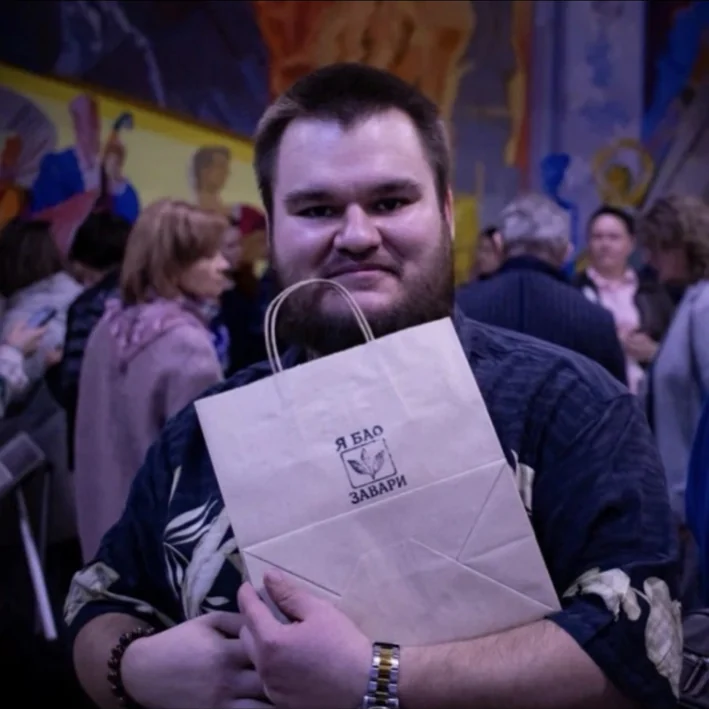
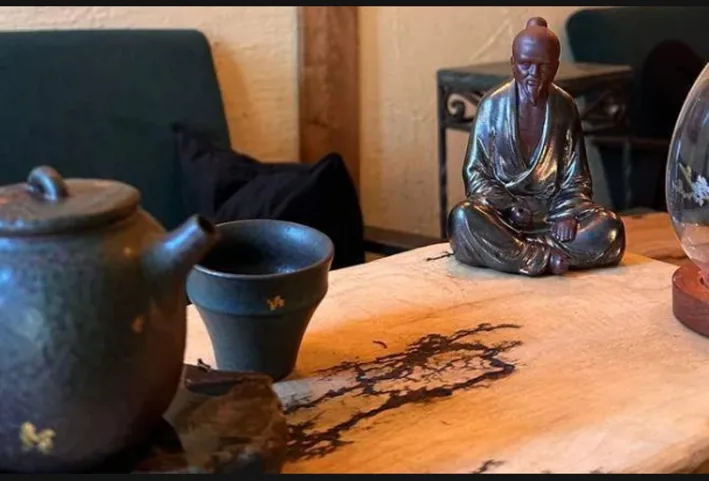
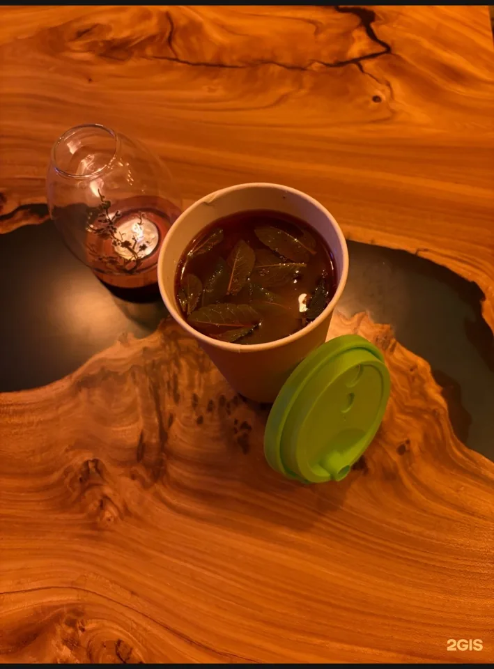
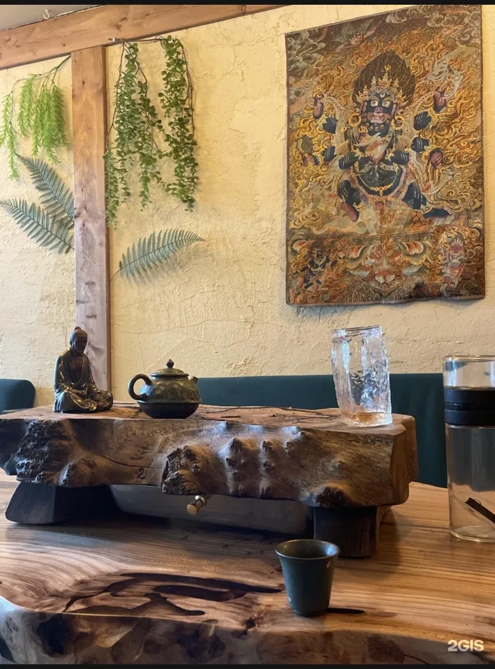

Взять чай с собой
Быстрый формат, если хочется горячий напиток на прогулку по Кировке или по дороге домой.
Китайский чай, чайные церемонии, настолки и уютные вечера в тёплом полуподвальном пространстве на Кирова, 94. Если хочется спокойно посидеть, прийти компанией или выбрать чай домой — вам сюда.

Здесь не нужно разбираться в сортах заранее. Можно просто прийти, сказать «хочу что-то мягкое» или «сегодня нужен чай с характером», и вам помогут. Место про вкус, общение и ощущение вечера, который не хочется торопить.
Пар над чашкой, тяжёлый глиняный чайник и живая фактура дерева создают ощущение, что время здесь идёт медленнее. Можно просто сесть, выдохнуть и довериться чаю.
 Чабань
Чашка с горячим чаем
Чабань
Чашка с горячим чаем
 Глиняный чайник
Глиняный чайник
Пуэр, улун, габа, авторские чаи, пиалы и чабани — выберите то, что хочется забрать домой, добавьте в корзину и отправьте заявку на доставку.
Быстрый формат, если хочется горячий напиток на прогулку по Кировке или по дороге домой.
Уютный стол, мягкий свет и чай, который можно подобрать под настроение, а не по сложным названиям.
Неспешный вечер с проливами, вкусами, ароматами и разговором без формальности.
Настолки, общение и чай, который объединяет людей за одним столом.
Можно спокойно открыть ноутбук, сесть поудобнее и провести несколько часов без лишней суеты.
Пуэры, улуны, габа, авторские чаи и аксессуары для домашнего ритуала.

«Я Бао Завари» — это не просто про чай. Это про место, куда хочется привести друзей, сесть поудобнее, убрать телефон в сторону и провести вечер с ощущением, что никуда не нужно спешить.
Евгений собрал вокруг чайной понятную и живую атмосферу: без пафоса, без лишней строгости и без ощущения, что нужно «быть в теме». Здесь можно прийти впервые, задать любой вопрос и спокойно выбрать свой формат — от короткого чая с собой до полноценной церемонии.

Подойдёт для свидания, спокойного вечера вдвоём, знакомства с китайским чаем или встречи небольшой компанией. Мастер подбирает чай, ведёт через вкус и помогает почувствовать сам процесс, а не просто выпить напиток.


Хотите тишины, свидание, встречу с друзьями или место для работы с ноутбуком? Выберите настроение — подскажем, как лучше провести время в чайной.
Гости отмечают уют, чайных мастеров, настолки и ощущение места, куда хочется возвращаться.
«Очень уютно, хочется возвращаться. Внутри спокойно, тепло и по-настоящему атмосферно».
гость чайной«Помогли выбрать чай, хотя я почти не разбирался. Всё объяснили просто и без снобизма».
первый визит«Отличное место для компании: чай, настолки и разговоры — вечер проходит незаметно».
вечер с друзьями«Чайная церемония — отдельный опыт. Хороший вариант для свидания или спокойного вечера».
чайная церемонияМожно быстро записаться на церемонию или забронировать столик. После заполнения формы сайт соберёт готовый текст сообщения — его можно сразу открыть в WhatsApp.
Быстрая заявка
Пара полей — и у вас уже готовое сообщение, которое можно сразу отправить администратору.
Перед визитом можно сразу открыть маршрут в удобной карте. Если не сразу нашли вход — ориентируйтесь по 2ГИС или Яндекс Картам: так проще сориентироваться на месте.